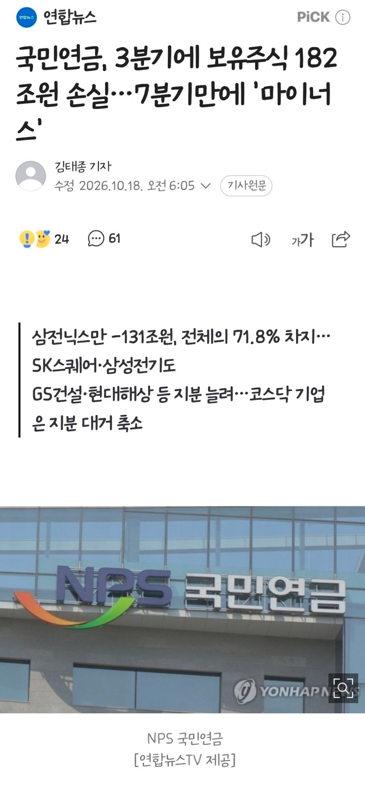

'국민연금', 3분기에 보유주식 182조원 손실.jpg
댓글
워딩 거친건 커뮤니티 특성상 인정하는데 시총1 2위 폭락한 장에서 평가손실 난 걸 가지고 리밸런싱 안했다고 우기는게 어이없는거예요
이걸 이악물고 쉴드치는 사람들이 있다는게 코미디임
근데 손실난거 어떻게 알고 뉴스에 내보내는거지??? 투자실패하면 내부에서 정보 세어나가는건가??
의무적으로 국민연금이 고지하는거임
아하.. 감사감사
공시를 해야함
아직도 쉴드치는 병신들이 있네
원칙대로 하라는게 그렇게 힘듬?
진실은 아무도 모르고 정치적으로 편향되어서 해석하고 어쩌고 하는 사람들 튀어나오더라 ㅋㅋㅋ
오늘 뉴스 보면 또 뭐라고 할지 궁금하긴 함
6월에 중요행사가 있어서 못팔았데 ㅜㅜ
세상 모든게 ㅇㄱㄸ 묻으면 이렇게 됨
티~원
국민연금은 지 알아서 하게 걍 냡두면 잘 할 긴데
대재명 충성🫡
한 5년 전에 개인 투자자들이 항의했던건 사실이고 어느정도 반영된것은 사실이나 당시에 SAA와 TAA 범위를 조정했을 뿐 총 허용범위와 목표비중도 그대로였죠? 지금 그거 이야기가 아니라 올해 새로 바꾼 원칙을 지적하는거에요.
개미가 뭐 단일개체고 하이브 마인드에요? 태세전환이라고 하면 무슨 근거로 이중잣대라고 하는지 모르겠네, 지금 질문은 왜 운용원칙을 바꿨고 그 변경의 근거와 기대편익이 무엇이었느냐 인데요. 개인투자자가 뭐라고 했든 그 결정을 하고 책임지는 주체는 기금운용위원회 아녀요?
올해 왜 운용원칙을 바꿨고, 그 변경의 정량적 근거와 기대편익이 무엇이었느냐는 지적을 하면서 여론이 형성되는 건데, 왜 사실관계를 그렇게 뒤섞어서 21년에 개인투자자 항의를 받아들인 걸 올해 반영한 것 처럼 말하고, 니들로 묶으면서 태세 전환이 역겹다? 지랄 역겹다 이런 워딩 안하면 대화가 안되시나봐요